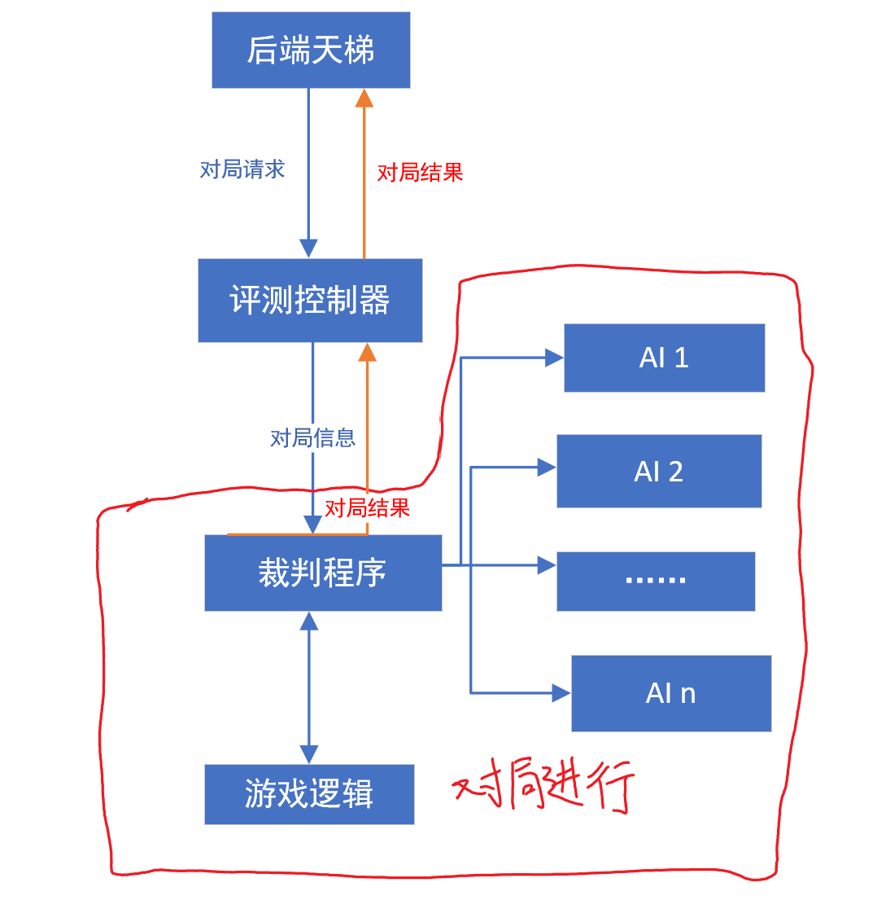

网站-游戏流程
网站涉及内容众多，这里只详细叙述一局游戏的流程
游戏启动有两种类型, 可能由天梯启动或者由人类启动, 两个过程不同.
天梯启动游戏的流程:
-
后端的天梯模块生成一个对局请求, 发送给controller(包括: 游戏类型, 对局AI程序的ID)
-
controller收到对局请求后, 启动游戏对应的judger,发送对局AI程序的信息给judger
-
judger启动AI和游戏逻辑
-
对局中, judger, AI, 游戏逻辑之间进行通信
-
对局结束, judger将结果返回给controller
-
controller将结果返回给后端天梯模块

人类启动游戏的流程:
- 房主在网站前端选择一个评测机, 申请建立房间
- controller建立房间, 等待玩家/AI加入
- 玩家向房间内添加AI/删除AI 人类玩家或观众通过Token进入房间, 用播放器建立连接
- 房主在前端开始游戏, 向评测机发送对局请求
- controller启动judger, judger启动游戏逻辑和AI
- 对局中, judger, AI, 人类玩家/观众(播放器), 游戏逻辑之间进行通信
- 对局结束, judger将结果返回给controller
- controller将结果返回到后端和播放器